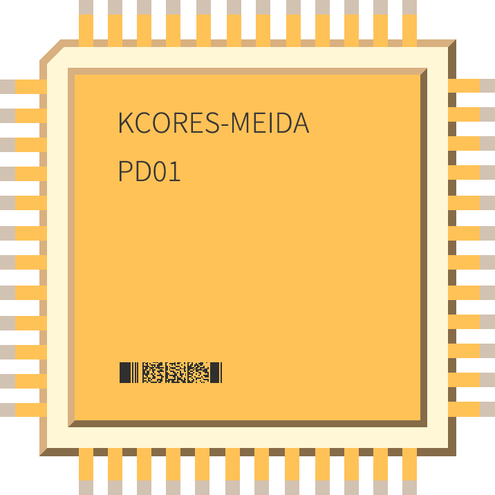

KCORES
KCORES-氪金核心. 该项目由 @karminski-牙医 发起, 目的是建立一个大家能轻松讨论泛计算机话题的环境.
目前话题包括但不限于: 消费电子, 万兆网络, 家用NAS, 垃圾佬, 服务器, 云服务及主机, 仪表, Homelab, Vintage 等
本来会有网站, 但由于懒癌发作, 故目前只在各大网站水文章以及各种群吹水【手动滑稽】
目前暂由 @karminski-牙医 及 @awpak78 撰写内容. 内容的归属权为撰写者所有. 欢迎关注~
@karminski-牙医
@AlphaArea